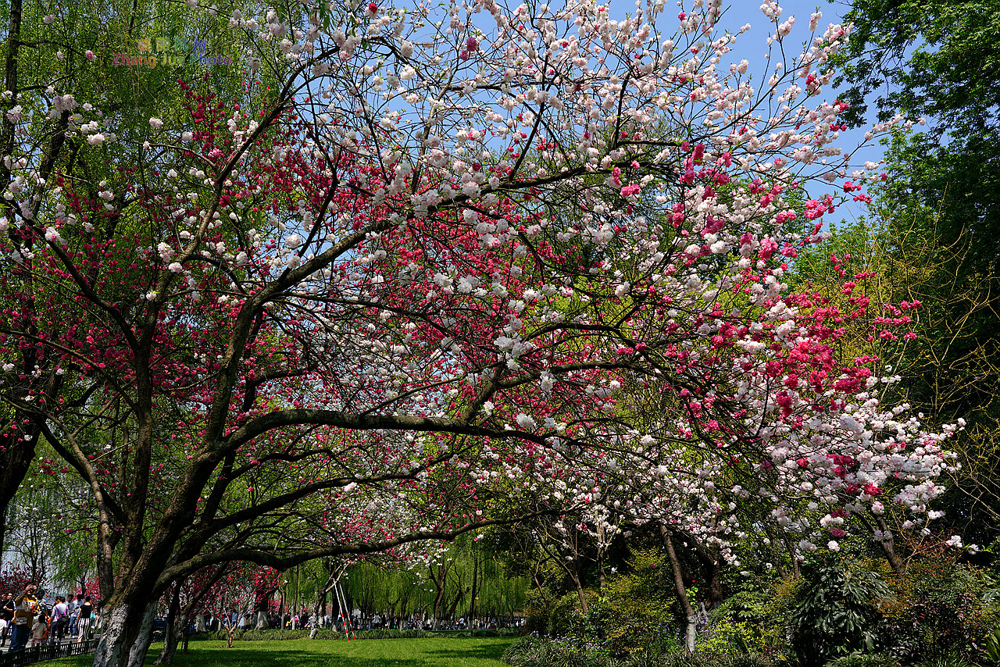
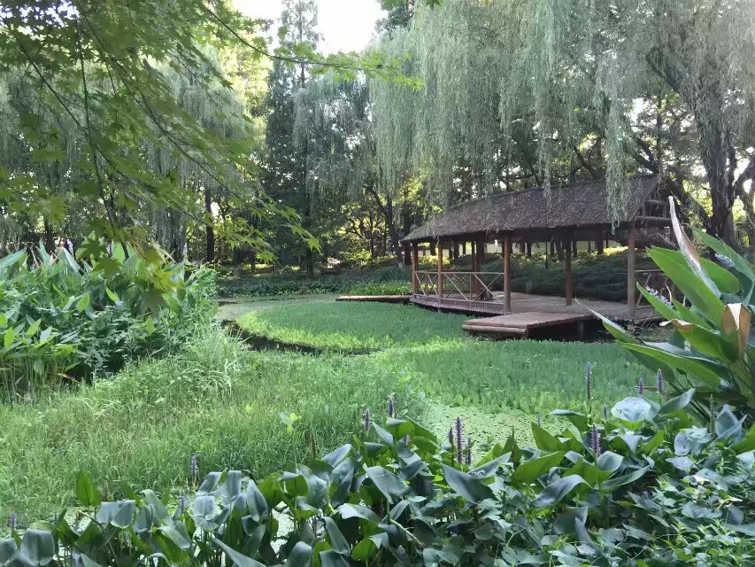

柳浪闻莺是西湖十景之五，位于西湖东南岸，清波门处的大型公园。分友谊、闻莺、聚景、南园四个景区。柳丛衬托着紫楠、雪松、广玉兰、梅花 等异木名花。南宋时，这里是京城最大的御花园，称聚景园。当时园内有会芳殿和三堂、九亭，以及柳浪桥和学士桥。清代恢复柳浪闻莺旧景。有 柳洲之名。其间黄莺飞舞，竞相啼鸣，故有“柳浪闻莺”之称。
南宋时为帝王御花园，称聚景园，清代恢复柳浪闻莺旧景。现为柳浪闻莺公园，地处西湖东南隅湖岸，占地约二十一公顷。园林布局开朗、清新、 雅丽、朴实。柳丛衬托着紫楠、雪松、广玉兰及碧桃、海棠、月季等异木名花。是欣赏西子浓妆淡抹的观景佳地，临水眺望，视野开阔，空气清 新，令人心旷神怡。
南宋时期，它的范围南起杭州旧城清波门外，北至涌金门下，东倚城垣，西临西湖水面，而且还包括了接近湖岸的若干洲渚如柳洲，水心寺基（小瀛 洲前身）等
宋末元初，聚景园改名为“散景园”，其南侧一带，被辟为随蒙元铁骑南下迁居杭州的回民墓地，巨商阿老丁，在杭州兴建清真寺，死后葬此，这里 又俗称回坟；其中段之地，荒芜淤塞成为一片七零八落的沼泽水塘，其北部地段原有的灵芝寺，显应观等显赫堂皇的寺庙，也随园景一起难逃厄运。到 明代中叶，当年蔚然大观的柳浪闻莺胜景，只剩下柳浪桥，华光亭两处破旧陈迹。
清初，更是一派凄凉景象，紫珊老人（钱塘诗人徐逢吉）《少年游》词的上半阙专写地盛况不再的情景；“蛇蟠眢井，狐窜破冢，辇路已全荒。燕子 飞来，桃花不语，阅过几沧桑。”清中期逐步恢复柳浪闻莺旧景。到一九四九年，柳浪闻莺仅存景名碑，石碑坊，石亭子和沙朴老树各一，表忠观（钱王 祠）旧屋一区以及祠前方塘两口。附近居民干脆称那里为坟山窠。
张岱的《西湖梦寻》中说道过柳洲亭：
“柳洲亭，宋初为丰乐楼。高宗移汴民居杭地嘉、湖诸郡，时岁丰稔，建此楼以与民同乐，故名。门以左，孙东瀛建问水亭。高柳长堤，楼船画舫会 合亭前，雁次相缀。朝则解维，暮则收缆。车马喧阗，驺从嘈杂，一派人声，扰嚷不已。堤之东尽为三义庙。过小桥折而北，则吾大父之寄园、铨部戴 斐君之别墅。折而南，则钱麟武阁学、商等轩冢宰、祁世培柱史、余武贞殿撰、陈襄范掌科各家园亭，鳞集于此。过此，则孝廉黄元辰之池上轩、富春 周中翰之芙蓉园，比闾皆是。今当兵燹之后，半椽不剩，瓦砾齐肩，
蓬蒿满目。李文叔作《洛阳名园记》，谓以名园之兴废，卜洛阳之盛衰；以洛阳之盛衰，卜天下之治乱。诚哉言也！余于甲午年，偶涉于此，故宫离 黍，荆棘铜驼，感慨悲伤，几效桑苎翁之游苕溪，夜必恸哭而返。”
其中的“高柳长堤，楼船画舫会合亭前，雁次相缀。朝则解维，暮则收缆。车马喧阗，驺从嘈杂，一派人声，扰嚷不已。”之句，应是指靠近西湖岸 边的闹市区，这一带也是今天的河坊街。不过所说的三义庙却无从考证，应和刘、关、张有关了。但下面张杰的《柳洲亭》中“谁为鸿濛凿此陂，涌金门 外即瑶池”。所说的涌金门即在柳浪闻莺之东应是正确的。此亭早已不见了踪迹，靠近水岸也立有一小亭，亭中有御制石碑，上书"柳浪闻莺"四个大 字，2010年再去探访西湖的时候，却不知道移到何处去了。
北京圆明园的柳浪闻莺景区在文源阁西北，1763年（乾隆二十八年）建。在溪滨柳荫间，竖立一座汉白玉石坊，坊楣题额“柳浪闻莺”，略仿杭州西 湖同名景意境。此坊额曾流散于北京大学朗润园，1977年运回圆明园，今展陈于西洋楼海晏堂遗址北侧。
垂绦鹅黄弄水盈
经过近四十多年不断的开发和建设，由当年帝王享受的御花园，演变为普通老百姓的大乐园。她仍以青翠柳色和婉转莺鸣作为公园景观基调，在沿 湖长达千米的堤岸上和园路主干道路沿途栽种特色柳树。
西湖的垂柳品种来源于天津北仓苗木基地，属于稀有品种节节垂，在北方都几乎绝迹。低垂青丝，如少女想着心事的叫垂柳；柳丝纤细风中飘动似 贵妃醉酒的，称“醉柳”；枝叶繁茂树头若如狮头的，称“狮柳”；远眺像少女湖水旁浣纱漂丝的，称“浣纱柳”等。百柳成行，千柳成烟，细柳丝绦其间黄 莺飞舞，竞相啼鸣，形成了真正具有神韵的的有“柳浪闻莺”。
莺：雀形目,莺科或林莺科的小型鸣禽。
莺类体小，善捕食昆虫，鸣声乐耳。见于花园、林地及沼泽地，多为棕色、绿色、橄榄色、棕色、浅黄色和黑色。有近350种，与鸫及旧大陆翔食雀 类近缘。莺科的种类主要见于欧亚到澳大利亚及非洲一带，为人们所熟知，因此各有其俗名，如黑顶莺、白喉莺,及棕柳莺,苇莺属，短翅莺属，芦莺 属，树莺属。
公园东南辟为群众游园文娱活动场所，建起了露天舞台，成为杭州市民和八方游客晨间锻炼、假日休闲和节日庆典的好去处。每到夏秋季节，这里 又是消暑纳凉的“夜花园”，歌舞、戏曲、电影，内容多样，形式丰富。不定期举办的各种各样的花展、灯会、民俗风情表演等，吸引着人们。
在园中部主景区辟闻莺馆，又在距闻莺馆不远处置巨型网笼“百鸟天堂”，营造烟花三月、柳丝飘舞、莺声清丽的氛围。闻莺馆东面，以草坪和密林 带为主形成友谊园景区，引种了一批日本樱花，草坪北侧铺石砌台，矗立着日中不再战纪念碑。闻莺馆西侧，是柳浪闻莺重建时填平水荡沼泽而营造的 大草坪，草色遥连西湖碧波青山，大草坪北侧，是迁建来此的康熙御题柳浪闻莺景亭碑；南侧种植了一片高大的乔木树林，与草坪、柳岸及湖光山色构 成富于层面，角度变化的生动图景。
公园北部早先的钱王祠，改建成江南私家园林风格，布局的庭院景区，沿用“聚景园”旧称命名。园内亭台楼榭，假山泉池，小桥流水，矮墙漏窗， 奇花异草，各据其位，合为胜景，全园曲径通幽，别有天地。
每到阳春三月，绿柳笼烟时节，万树柳丝迎风飘舞，宛若翠浪翻空，碧波汹涌。这里的柳浪闻莺公园，四个友谊、闻莺、聚景、南园景区，布局开 朗、清新、雅丽、朴实。柳浪下拍打着着紫楠、雪松、广玉兰、碧桃、海棠、月季、梅花等异木名花。园东草地坪上耸立着“中日不再战”纪念碑，耸立 在日本樱花的雪海之中，为中日两国人民友好情谊的象征。园南隅有小山樵舍，是清代文人陈兆仑旧居。